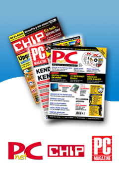

Yeni Yıl Armağanınız:
Pardus 2007 CD'si...
 Chip
// Ocak 2007 sayısında Pardus 2007 CD'si...
Chip
// Ocak 2007 sayısında Pardus 2007 CD'si...
Ayrıca Pardus geliştiricilerinden Koray Löker'in kaleme aldığı geniş bir tanıtım yazısı. Pardus 2007 ile yeni tanışacaklar için biçilmiş kaftan :::::
 PC Magazine
// Ocak 2007 sayısında Pardus 2007 CD'si...
PC Magazine
// Ocak 2007 sayısında Pardus 2007 CD'si...
Ayrıca DVD'de 5 oyunun PiSi paketleri. Pardus 2007'yi oyun amaçlı düşünenler için birebir :::::
 PCNet
// Ocak 2007 sayısında Pardus 2007 ve Çalışan CD'nin ISO görüntüleri DVD'de... İnternet üzerinden indirme konusunda sıkıntı yaşayanlar için :::::
PCNet
// Ocak 2007 sayısında Pardus 2007 ve Çalışan CD'nin ISO görüntüleri DVD'de... İnternet üzerinden indirme konusunda sıkıntı yaşayanlar için :::::
Tüm Pardus kullanıcılarına mutlu yıllar diliyor, işbirliği yapan aylık bilgisayar dergilerine teşekkür ediyoruz...
Bu web sitesinde bulunan bilgi ve belgelerin, kaynak gösterilmek koşulu ile kullanılması serbesttir.
Pardus markası ve logotipi TÜBİTAK'ın tescilli markasıdır. Kullanım koşulları için Yasal Uyarı bölümünü inceleyiniz.
Bilgi ve önerileriniz için bilgi at pardus.org.tr
TÜBİTAK - UEKAE, PK.74 41470, Gebze / Kocaeli.